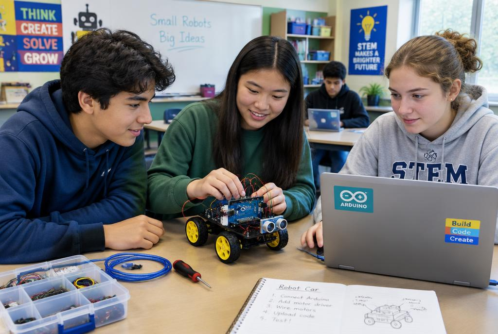
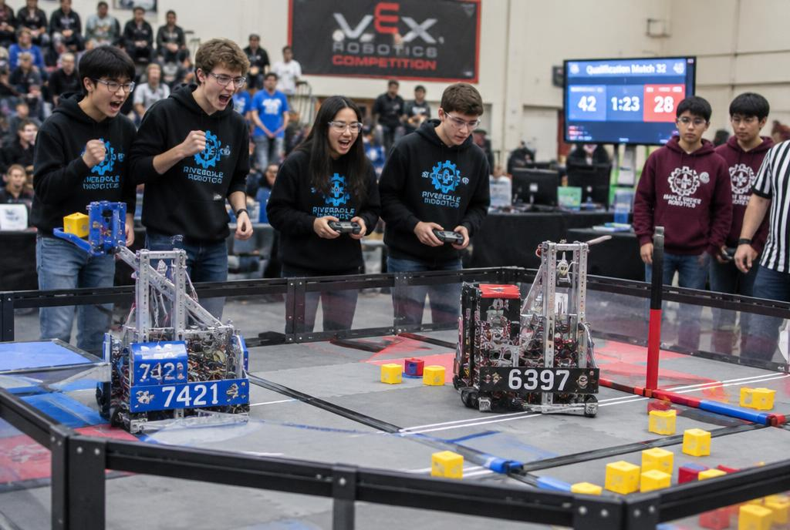

Robótica en la educación
La robótica educativa usa robots y kits electrónicos para aprender ciencia, tecnología, matemática y programación de forma práctica. En lugar de solo leer teoría, los estudiantes diseñan, arman y prueban sus propias ideas.

¿Qué se aprende?
Con placas como Arduino, sensores, motores y LEDs se aprenden conceptos de electrónica, algoritmos, variables, condicionales y ciclos. Cada proyecto conecta lo que se programa en la computadora con algo que se mueve, se enciende o reacciona en el mundo real.
Habilidades que desarrolla
- Pensamiento lógico: dividir un problema grande en pasos pequeños.
- Trabajo en equipo: repartir tareas de diseño, armado y programación.
- Creatividad: inventar soluciones propias a problemas reales.
- Perseverancia: probar, equivocarse, corregir y volver a intentar.

Competencias y ferias
Las competencias de robótica y las ferias de ciencia motivan a los estudiantes a mostrar sus proyectos, compartir ideas con otras escuelas y enfrentar desafíos con tiempo límite, como lo harían en un trabajo real.
De 1.º a 6.º año
En nuestra escuela la robótica avanza año a año: desde un circuito sencillo con LEDs hasta un control de acceso con RFID y servomotor. Podés ver cada etapa en la sección de proyectos.
← Volver a aplicaciones